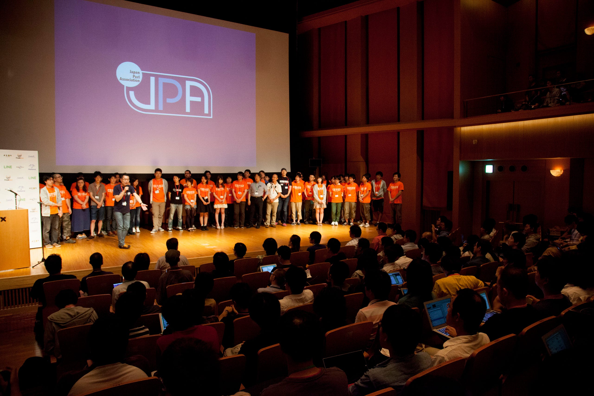
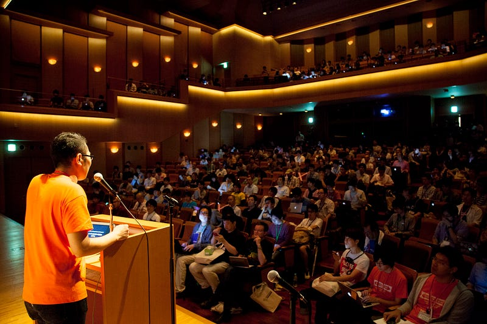
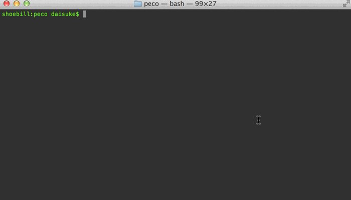
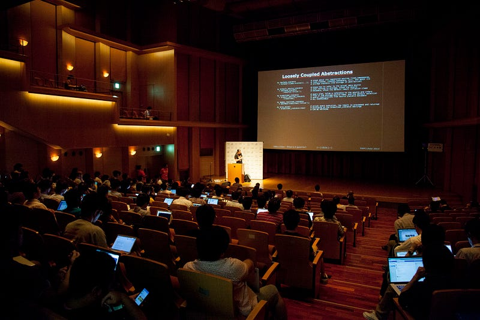
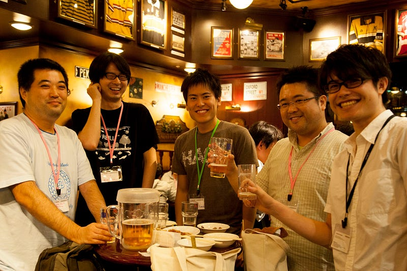

Where Were You During YAPC::Asia Tokyo 2014?

Where Were You During YAPC::Asia Tokyo 2014?
Or, “We Know, Because We Have The Official Pictures”
Organizers: Take Charge Of Your Photos
So since YAPC::Asia Tokyo 2009, we have always hired a professional photographer. We ask the photographer to take photos of ALL speakers, as much of the crowd as possible, the dinner, and anything that might look fun at YAPC.

You can find photos for YAPC::Asia Tokyo 2014 here. Just remember that we use the url format “http://yapcasia.org/$year/photos”. Accessing this URL redirects you to the correct photo storage site (as we may move them around in the future), and that we have photos since 2009. For the last 3 years, 30 Days Album has been graciously donating their service for us to use.
Why do we do this? Because a single picture tell a thousand words. No matter how much you try to explain what a YAPC is to a prospective attendee or a sponsor, you just can not tell what it is really like with words. With photos we can just show it and immediately convey the message. And we go to the trouble of hiring a photographer because we want professional quality photos to impress people who have never heard of us.
An Example Of Power Of Multimedia
If you are not convinced, just let me give you one anecdotal episode of mine. I wrote a tool called peco. It’s an “interactive command line filtering tool”. It receives input from either STDIN or a file, and displays them in the terminal. You can type in queries to filter those lines. When you press enter, the selected lines are printed out to STDOUT.
You got that? I think I did a very good job explaining what it does, but I am pretty sure I lost your attention by the time you read “interactive command line filtering tool”
Now take a look at the animated GIF image that is included in the README for the project:

Now which was easier to understand? If you answered “my text” then I think I am a much better writer than I thought I was. But in reality, most prospective sponsors and attendees don’t read our text. But they are willing to check out a few of our photos.
How To Put The Photos In Good Use
Blog’em!
One of the best ways to put these photos to good use is to just allow anybody to use them on their blog posts and articles. We do that. Your blogs are SO MUCH BETTER when you use photos to describe the YAPC you just went to (example, example).
I don’t mean to pick on anybody, but just as a reference, pretend that you have never been to a YAPC before, you are not exactly in the mood to investigate what it is, and you came across these two blog posts: 1) My writeup on YAPC::Asia Tokyo 2014, and 2) acme’s report on YAPC::EU 2014. Which do you think will be better received by the people outside of the Perl community?
And usually these blogs stay online for years. You pay for the photographer once, but the photos are viewed over and over. I cannot stress enough how cost effective this is.

Convince The Sponsors!
So that’s about random people who come across YAPC on the web. How about this: sponsors. The main reason I started hiring photographers back in 2009 was because I had a such hard time trying to explain what a YAPC is, and why people should sponsor YAPC when I was going around companies asking for sponsorship in preparation for YAPC::Asia Tokyo 2009. I had no marketing material. Nothing to show what the event was like.
I hated this. I HATED this. I knew the event was great. I knew the people came here have lots of fun. I knew every penny put into sponsoring this event is worth SO much. But really, I had no other choice than to beg to trust me on it.
Starting from 2010, this changed. We brought sets of pictures from our last event. We showed sponsors what it is like at a YAPC::Asia. Now we could spend more time discussing how to work together instead of trying to convince them what YAPC was and what it was like to be there.
For 2014 it was even better, because in 2013 we came up with one of our killer sponsor items: The speaker back panel. We took photos of this great sponsorship opportunity for YAPC::Asia Tokyo 2013 and showed prospective sponsors the photos. For 2014 every sponsor literally rushed to buy a slot for it:
Look ma! If you become a sponsor and buy a slot for the backpanel, your name will appear behind every speaker! And guess what, because these are professional quality pictures, many of our speakers use them as their profile photos on top of putting them on blog posts and what not. The speaker back panel has been one of the greatest sponsor item ideas that we put into sale.
Let The Attendees Relive The Excitement
Even if some photos just cannot be used for marketing… it’s still much better to have them, and have GOOD photos, because it’s one of the things that all of the attendees can use to look back about the event.
Maybe they won’t see them right after the event. But they may remember about YAPC a year or two after. At that point they can just casually peruse through our photos. They can relive the memory.
After all, we work hard for these events because we want the attendees to feel good about it. Good photos capture the fun. And we have that.

Conclusion: There Is Only Merit For Taking Professional Photos
Ditto. If you have not done so, you should, starting from your next YAPC.